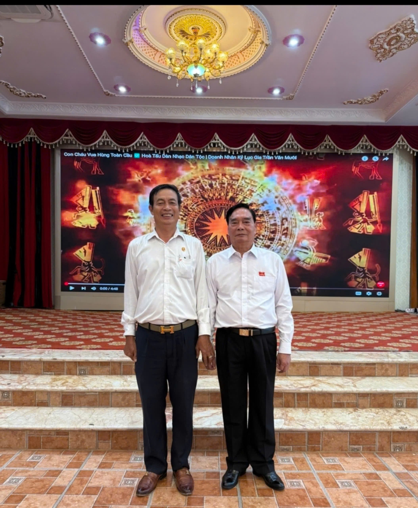
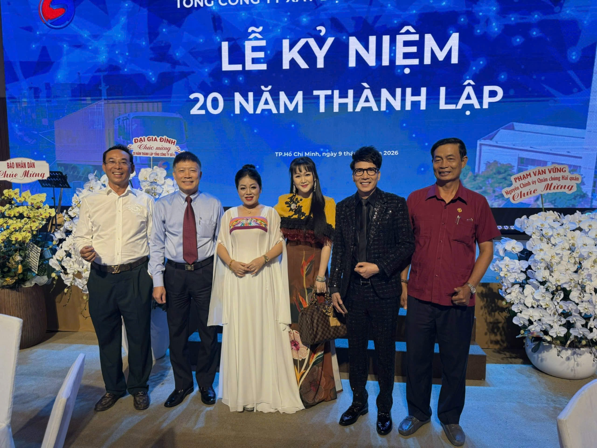
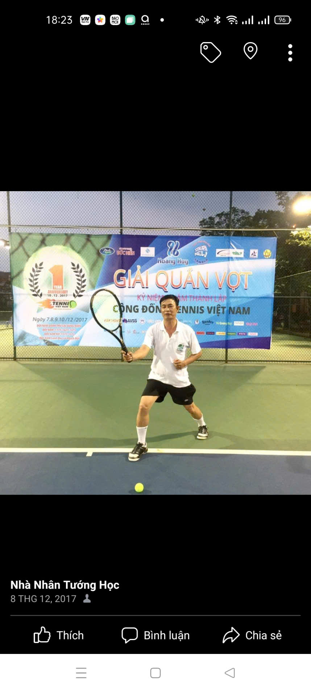
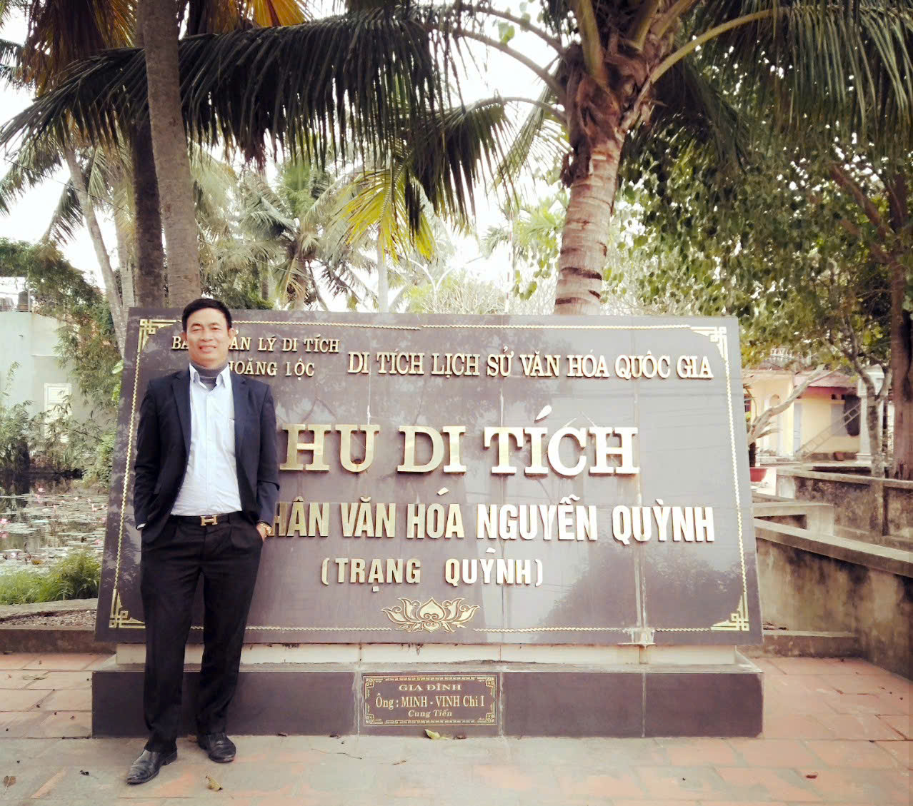
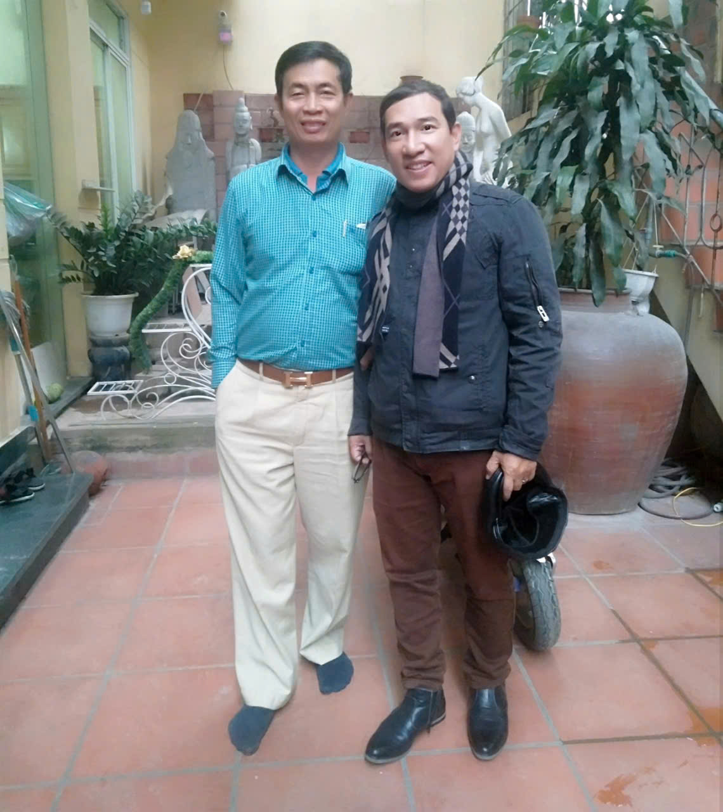

✕
‹
›
Nhà nghiên cứu tướng số người và phong thủy, xem ngày giờ chọn việc theo chân mệnh, năm sinh. Đàm đạo, tư vấn thấu đáo — giúp người thành công, hạnh phúc là niềm vui của Thầy.

Từ thập niên 80–90 của thế kỷ 20, khi còn là sinh viên đại học, Thầy đã được ban giám hiệu nhà trường, thầy cô, sinh viên nhờ xem tướng số — kết quả được ghi nhận tốt đẹp, đúng như tiên đoán.
Sự đam mê, cần cù chịu khó, học hỏi ở mọi lúc mọi nơi, hơn 50 năm nghiên cứu và thực tiễn đi xem, Thầy được người đời tôn kính về đức độ, nhân cách — không phô trương hình thức, không nói sai, chỉ xem đúng.
Không đặt quẻ, không ra giá — bằng sự kính trọng, biết ơn tùy tâm. Trường hợp gặp vận khó, tai ương, họa không báo trước, Thầy không nhận tiền vật chất. Giúp người thành công, hạnh phúc chính là niềm vui của Thầy.
Xem là đúng — trả lời, tư vấn những thắc mắc theo yêu cầu người xem. Cùng đàm đạo với người cùng chí hướng, tìm hiểu khám phá mới lạ của nhân loại.
Xác định mệnh, mạng, diện tướng, cốt tướng, ẩn tướng dựa trên năm sinh và các đặc điểm cơ thể.
Phân tích các gò tay, 16 đường chỉ tay, hình dạng bàn tay, màu sắc, các ngón và đốt tay, ngôi sao, chữ thập, hình tam giác, hình vuông, v.v.
Xem đất, hướng nhà theo nguyên tắc "vượng địa mới vượng nhân" — phân tích bát quái cửu cung, phân cung định phương vị, tầm long mạch.
Tư vấn phong thủy cho công ty, nhà máy, tập đoàn, nhà hàng, địa điểm kinh doanh.
Không chỉ vì kiến thức uyên bác, mà còn bởi sự thấu cảm và nguyên tắc bảo mật được giữ vững suốt nhiều năm qua.
Lời khuyên không mang tính ép buộc hay vẽ ra viễn cảnh phi thực tế. Thầy phân tích ưu, khuyết điểm trong vận số mỗi người để đưa ra định hướng điều chỉnh phù hợp.
Nguyên tắc giữ kín bí mật đời tư của khách hàng được bảo vệ an toàn tuyệt đối, trong mọi trường hợp.
Không đặt quẻ, không ra giá. Chỉ xem đúng, không nói sai sự thật — bằng sự kính trọng và biết ơn tùy tâm.
Được người đời tôn kính về đức độ, nhân cách — cùng gặp gỡ, giao lưu tại nhiều sự kiện lớn, và những chuyến đi tìm hiểu văn hóa, lịch sử.




Có 3 trường hợp không làm được phong thủy:
1Người thất đức2Người bị ma quỷ ám3Người lớn tuổi cầu conNgười tu hành không cần xem tướng số.
Phong thủy hay tướng số không phải là phép màu có thể thay đổi vận mệnh con người — mà là tấm bản đồ giúp mỗi người tự tin hơn trước những quyết định quan trọng trong công việc lẫn cuộc sống.
Một số điều khách thường hỏi trước khi liên hệ với Thầy.
Chỉ cần chuẩn bị năm sinh (âm lịch nếu biết), và giờ sinh nếu có để Thầy xem chính xác nhất. Với phong thủy nhà/doanh nghiệp, nên chuẩn bị thêm hướng nhà, sơ đồ mặt bằng nếu có.
Thầy không đặt quẻ, không ra giá cố định. Mọi sự tùy tâm kính trọng, biết ơn của người được xem — Thầy không nhận tiền vật chất, giúp người thành công hạnh phúc là niềm vui của Thầy.
Có thể. Với xem tướng số theo năm sinh và chọn ngày giờ, Thầy có thể tư vấn qua điện thoại. Với xem tướng bàn tay hoặc phong thủy nhà ở/doanh nghiệp, nên gặp trực tiếp hoặc gửi hình ảnh cụ thể để chính xác hơn.
Tùy từng trường hợp cụ thể, có thể từ một giờ đến nhiều giờ. Thầy sẽ đưa ra kết quả và hướng chỉnh sửa điểm khuyết, phát huy điểm tốt một cách đầy đủ.
Có. Nguyên tắc giữ kín bí mật đời tư của khách hàng luôn được Thầy tuân thủ và bảo vệ an toàn tuyệt đối trong mọi trường hợp.
Cần chỉnh sửa điểm khuyết, phát huy điểm tốt — để cuộc đời thành công, hạnh phúc. Thời gian xem tùy từng trường hợp cụ thể.
Không đặt quẻ, không ra giá — tùy tâm kính trọng, biết ơn.
Xem đúng, không nói sai sự thật — suy đoán khách quan, thận trọng.
Bảo mật tuyệt đối — giữ kín bí mật đời tư của khách hàng.